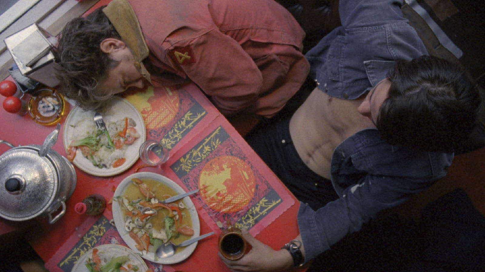
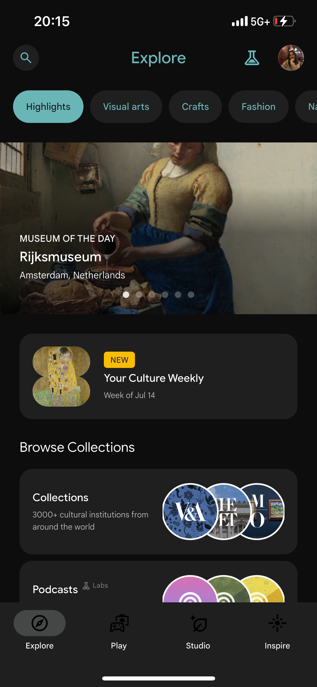

More offers of media digestion on my behalf.
My Own Private Idaho
I don't know what it is about this movie, it's not like I can personally relate to many of the themes, yet sometimes that is what makes certain films stand out the most. When they so masterfully tell a story that fills you with empathy and fully immerses you into an unknown world, I gain a new level of appreciation.
We see pleasing to the eye production methods that borrow from Lynchian, Shakespearean, and post-modern elements. Alongside the aesthetics and styling, this film explores ideas of class opposition, queer identity, and alienation. This contains an emotional depth that was cutting-edge for its time. It elicits all the right emotions. Not to mention: Keanu Reeves and River Phoenix. I highly recommend the watch.
Just Kids
Recently, I began reading "Just Kids" by Patti Smith and I am quite excited to embark on this journey. The heyday of women's 60's literature strikes again, but reasonably so. I will update this section when I am far enough to have something to say.
GA&C
An app I have enjoyed interacting with recently is Google Arts & Culture. This is phenomenal for inspiration, discovery, and engaging with phyical arts digitally. You can read, listen, play, tour, and so much more. You'll just have to check it out yourself.
My favorite features are categorizing art by medium and color, the "themes" page that allows coupled niche exploration, and the "inspire" tab is a nice supplement to a doomscroll. They're leaning into AI pretty hard, which is the biggest setback I have. While I have come to terms with the democratization of art through AI, there are still ehtical concerns. Nonetheless, still a wonderful app that deserves all the praise!